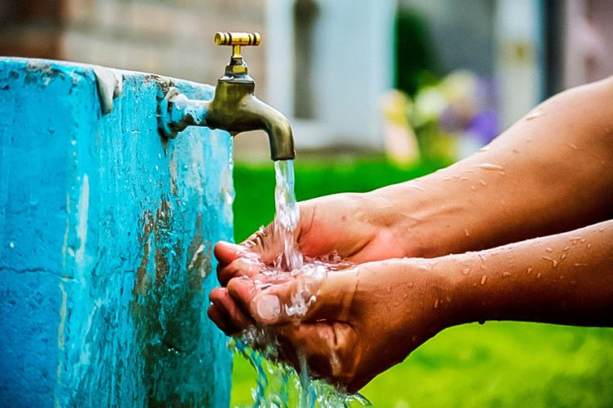
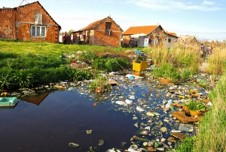
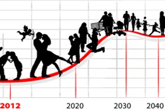
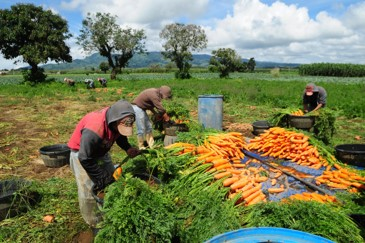
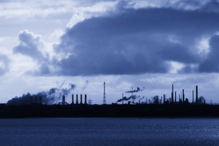
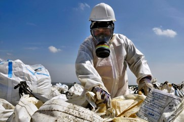

¡Bienvenido!
El consumo de agua es un tema crucial a nivel mundial, y sus consecuencias afectan tanto a la salud humana como al medio ambiente. A continuación, exploraremos algunas de las causas y consecuencias relacionadas con el uso del agua:

- ·Una de las principales causas de la escasez de agua es la distribución desigual del agua dulce en todo el mundo. Algunas regiones tienen acceso insuficiente, mientras que otras desperdician grandes cantidades.
- ·La falta de infraestructura adecuada para almacenar y distribuir el agua también contribuye a este problema.
- ·La contaminación de ríos, arroyos, lagos y lagunas debido al vertido de residuos tóxicos afecta la calidad del agua disponible para el consumo humano y agrícola.
- ·La presencia de microorganismos patógenos, pesticidas y plásticos también es un problema grave.

- ·El aumento constante de la población mundial aumenta la demanda de agua. Para el año 2030, se espera que el uso del agua aumente en un 40% debido a factores como el cambio climático y el crecimiento demográfico.

- ·La agricultura es responsable del 70% del consumo de agua a nivel mundial. El riego de cultivos requiere grandes cantidades de agua.
- ·La gestión eficiente del riego y la adopción de prácticas sostenibles son esenciales para equilibrar la demanda.

- ·El sector industrial representa aproximadamente el 20% del consumo de agua. En algunos países, la industria utiliza hasta el 50% del agua disponible para el consumo humano.

- ·El calentamiento global afecta los patrones de lluvia y la disponibilidad de agua. Sequías más frecuentes y eventos climáticos extremos dificultan la gestión del recurso hídrico.
- ·La falta de una gestión adecuada del agua contribuye a la escasez. Esto incluye la falta de políticas efectivas, regulación y planificación a largo plazo.

*La escasez de agua tiene impactos graves:
- ·Crisis alimentarias: La falta de agua afecta la producción de alimentos y la seguridad alimentaria.
- ·Problemas de salud: El acceso limitado al agua potable aumenta el riesgo de enfermedades transmitidas por el agua.
- ·Conflictos: La lucha por los recursos hídricos puede generar tensiones y conflictos entre comunidades y países.